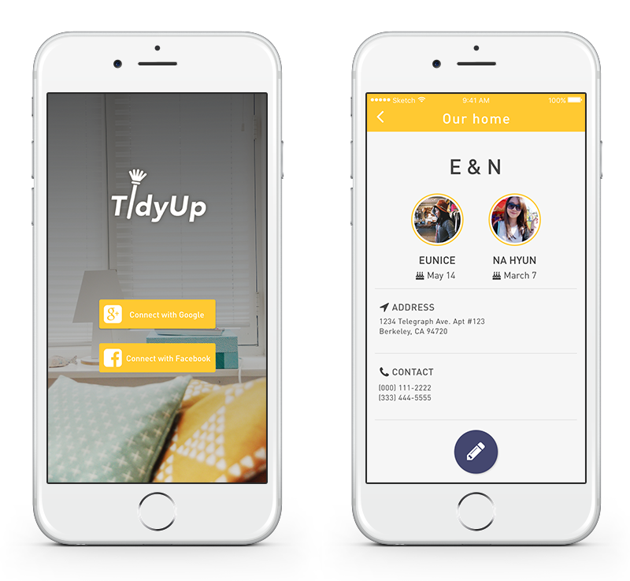
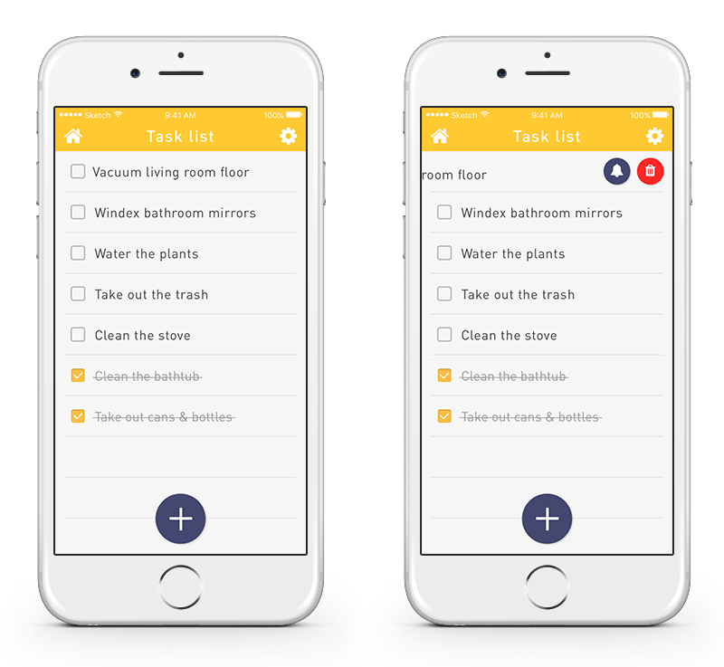
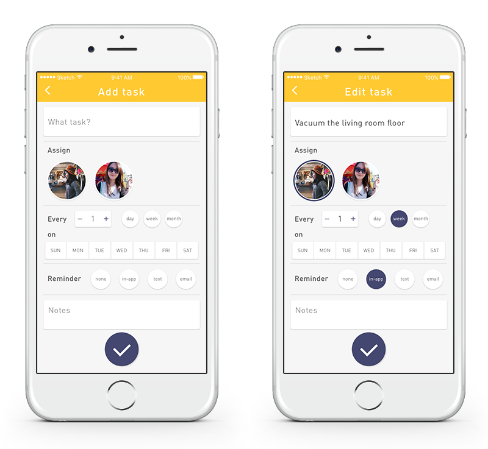

My housemate and I moved into our new apartment last summer. Soon the time came—time for chores logistics. Who's doing what, how often, stuff like that. So we sat down and made a Google Spreadsheet with chores as rows and months as columns.
It wasn't as simple as it seemed. Some tasks had to be done more often than others. We should definitely vacuum the floor and empty the trash bin more often than cleaning the bathtub. So we added nested columns in each month to represent weeks.
The spreadsheet was already getting pretty complicated. Then another problem arose: We needed another division of columns to rotate tasks. In retrospect, maybe we were a bit too nitpicky about making all this equal and fair, but we both knew that we didn't want the situation where one of us cleans the toilet all the time while the other windexes the bathroom mirror.
By the time we finished making our spreadsheet, it was quite difficult to follow what was going on. This easily translated into design challenges for the app concept.
The app conceptually fulfills all those needs we realized while making the spreadsheet. Namely,
The iOS built-in Reminders app has an intuitive interface in which users are able to add, delete, edit, and mark as complete. Since this is a chores list app, which essentially serves a very similar but contexualized function, I took Reminders as an inspiration for the general layout.
Days, weeks and months are discrete units that can be easily represented with buttons, but there are many different ways in which tasks can be repeated. By adding a numeric stepper, I tried to give the users more flexibility in customizing the frequency of tasks.
  